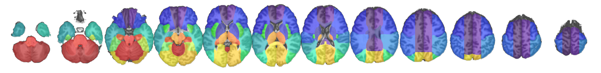

Our lab uses MRI to investigate brain organization and function. We develop and apply methods for processing and analyzing diverse MRI modalities in order to characterize distinctive brain patterns and to study conditions that include neurodegenerative diseases, psychiatric disorders, and stroke. We develop tools for brain MRI segmentation and quantification, promoting the means to perform reliable and reproducible translational research. We are involved with the creation of multiple electronic brain atlases and tools, extensively used by the neuroimaging community. Our work involves BigData and high-throughput analysis, by applying artificial intelligence to retrieve latent features that characterize diverse clinical conditions.

The atlas of brain arterial territories based on lesion distributions in 1,298 acute stroke patients. The atlas covers supra- and infra-tentorial regions and contains hierarchical segmentation levels created by a fusion of vascular and classical anatomical criteria. This deformable 3D digital atlas can be readily used by the clinical and research communities, enabling automatic and highly reproducible exploration of large-scaled data

The Acute-stroke Detection Segmentation (ADS) is a tool for detection and segmentation of ischemic acute and sub-acute strokes in brain diffusion weighted MRIs. The deep learning networks were trained and tested on a large dataset of 2,348 clinical images, and further tested on 280 images of an external dataset. Our proposed model outperformed generic nets and patch-wise approaches, particularly in small lesions, with lower false positive rate, balanced precision and sensitivity, and robustness to data perturbs (artefacts). The agreement with human delineation rivaled the inter-evaluator agreement. The method has minimal computational requirements and is fast: the lesion inference takes 20~30 seconds in CPU and the total processing, including registration and generation of results/report takes ~ 2.5 mins. The outputs, provided with a single command line, are: the predicted lesion mask, the lesion mask and the image inputs (DWI, B0, ADC) in standard space, MNI, and the quantification of the lesion per brain structure and per vascular territory.
Associate Professor of Radiology
Johns Hopkins University, School of Medicine
217 B Traylor Building
720 Rutland Ave
Baltimore, MD, 21205
Phone: (410) 955-4215
Email: afaria1@jhmi.edu